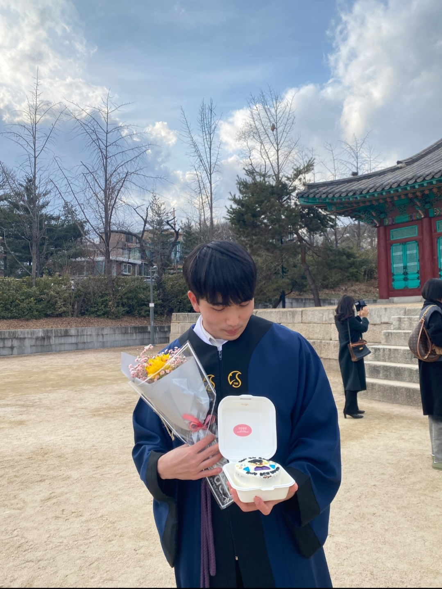
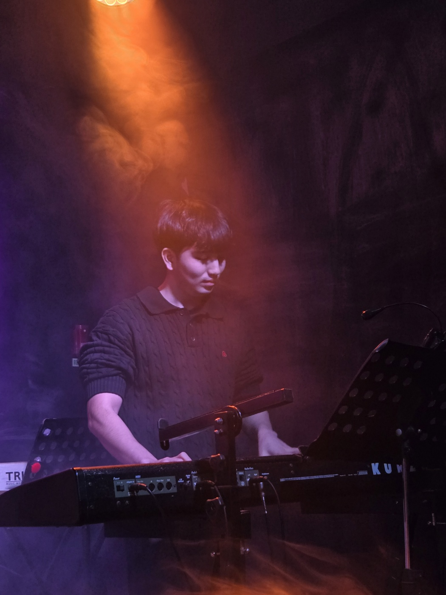
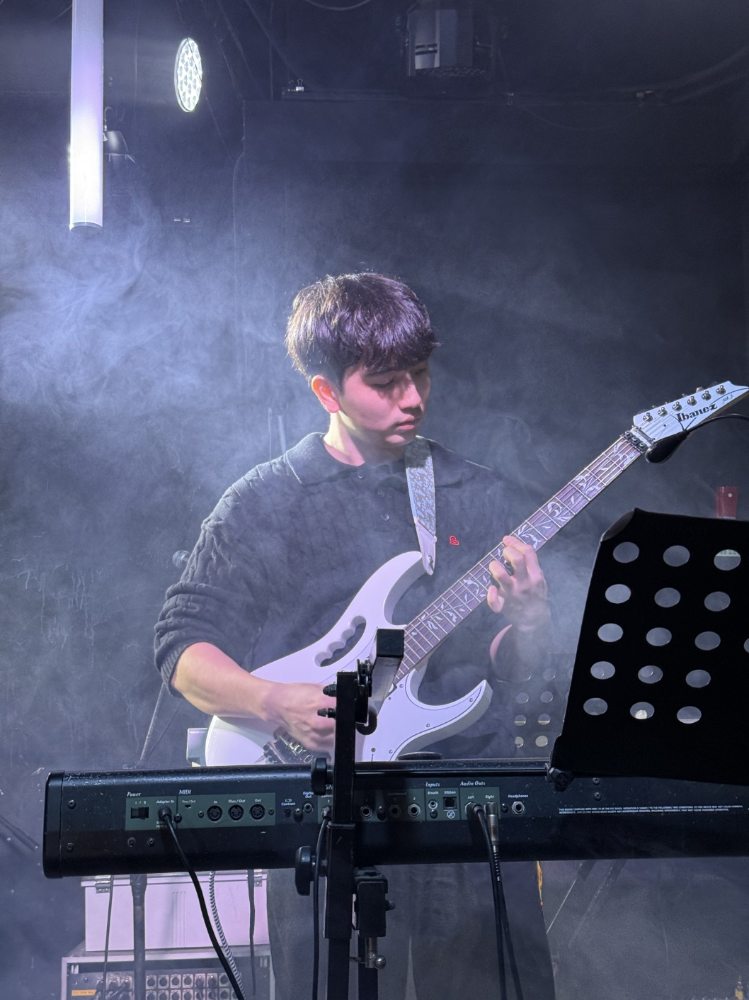

|
Eunseop Song Hi there! I'm a Master candidate at Robotics Innovatory, Sungkyunkwan University, South Korea, under the supervision of Prof. Hyouk Ryeol Choi. My research focuses on developing robotic solutions for physical human-robot interaction (pHRI) and intelligent robotic polishing using wrist force/torque sensors and indirect force control. |
 |
{kind=link}
Research
Current topics and technical interests across robot control, learning-based manipulation, perception, and design for intelligent robotic systems.

|
Control
This category covers robot control methods for stable motion generation and interaction,
including force control, compliance control, model-based control, and optimization-based control.
I am particularly interested in contact-aware control strategies that enable robust and precise task execution in real environments.
|

|
Imitation Learning
This category focuses on teaching robots from demonstrations.
It includes collecting expert trajectories, structuring multimodal datasets, and training policies that reproduce task-relevant motion and force behavior.
My interest is in applying imitation learning to practical robotic finishing and manipulation tasks.
|

|
Reinforcement Learning
This category includes reinforcement learning methods for robot control and decision making.
I am interested in how RL can complement model-based controllers, improve robustness, and learn residual behaviors that are difficult to model analytically.
It also includes reward design, policy analysis, and sim-to-real considerations.
|

|
Vision
This category covers vision-based perception for robotics, including 3D surface reconstruction,
environment understanding, and geometry extraction for task planning.
I am especially interested in using vision to generate task-relevant representations for polishing, contact planning, and motion generation.
|

|
LLM
This category explores how large language models can support robotics workflows,
from task description and planning to user-friendly robot interfaces.
I am interested in how language can help structure high-level instructions and connect human intent with robot execution in practical systems.
|

|
Design
This category includes hardware-oriented work such as mechanism design, tool design,
and integrated robot system construction.
I am interested in designs that improve task adaptability, force interaction, and practical deployment,
especially for robotic manipulation and surface processing applications.
|
Instrument
Musical instruments, performance recordings, and personal notes I want to organize on this page.
|
 |
Piano
This section can be used to organize piano-related content such as cover performances,
rehearsal clips, arrangement ideas, and practice notes. You can later connect this section
with your YouTube uploads or add a separate page for songs and recordings.
|
|
 |
Guitar
This section can be used to collect guitar performances, practice clips, tone settings,
session memories, and song-based 기록. Later, you can expand it into subtopics such as
gear setup, favorite pieces, and band performance archives.
|
Workout
Personal training logs, routines, and fitness-related notes that I want to organize on this page.

|
Weekly Strength Routine Example
This section can be used to organize workout routines, progress summaries, and training reflections.
For example, you can record weekly split schedules, target weights, volume progression,
or simple notes about recovery and body condition.
|